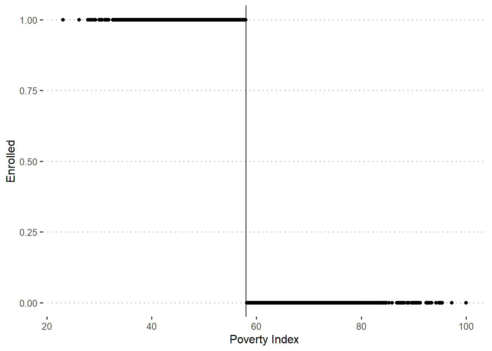
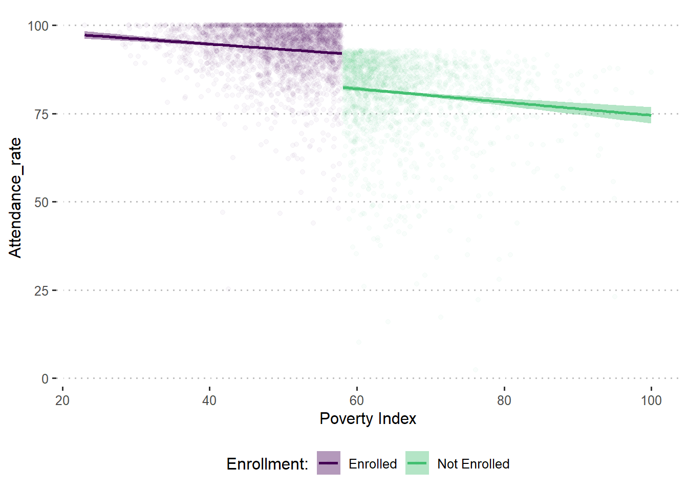

# Loading of packages, data, and seed setting here
library(haven)
library(tidyverse)
library(broom)
library(estimatr)
library(fishmethods)
library(kableExtra)
library(MatchIt)
library(modelsummary)
library(pwr)
library(rddensity)
library(skimr)
library(texreg)
library(gtsummary)
# you can read directly from github here --
trans_df <- read_csv("https://raw.githubusercontent.com/vmandela99/blog_vickman/refs/heads/main/posts/M%26E_01_School_Feeding_Causal_inference_%26_Counterfactuals/school_feeding.csv")
theme_set(ggpubr::theme_pubclean())
# subset data to only "eligible" units
df_elig <- trans_df %>%
filter(eligible == 1) Cover picture courtesy of Blessman International
Cover picture courtesy of Blessman International
Introduction
Designing impactful program evaluations is crucial for understanding the effectiveness of interventions in various domains, including health, education, and welfare. While methodologies often overlap, the specific design and variables must be tailored to the context of the program being evaluated. This blog post takes inspiration from a health program evaluation dataset to construct a similar design for evaluating the impact of a School Feeding Program (SFP).
The School Feeding Program aims to improve student outcomes by providing nutritious meals during school hours, potentially influencing attendance, retention, and overall well-being. By adapting the same evaluation framework used for health interventions, we can explore how carefully chosen variables capture the nuances of such educational programs. This blog post demonstrates how to replicate the evaluation framework by defining variables for outcomes, controls, and other program-specific characteristics, ensuring a one-to-one correspondence with the health program’s design.
The R code to get the data is here:-
Whether you are a researcher, program implementer, or enthusiast in Monitoring and Evaluation (M&E), this approach equips you with a transferable method for evaluating interventions across various sectors. Let’s delve into how this framework is tailored for the School Feeding Program evaluation.
1. Variable Definitions
In designing the evaluation framework for the School Feeding Program (SFP), it is essential to define variables that align with the program’s goals and context. Below, we outline the variables categorized into Outcome Variables, Control Variables, and Other Variables, ensuring they mirror the structure of a health program evaluation dataset.
Outcome Variable
This variable measures the primary goal of the SFP: improving school attendance.
| Variable | Description |
|---|---|
| attendance_rate | Average student attendance rate per school term (percent) |
Control Variables
These variables account for household and socio-economic factors that might influence school attendance or participation in the program.
| Variable | Description |
|---|---|
| age_hh | Age of the head of the household (in years) |
| age_sp | Age of the spouse (in years) |
| educ_hh | Education of the head of the household (completed years of schooling) |
| educ_sp | Education of the spouse (completed years of schooling) |
| female_hh | Head of the household is a woman (0=no, 1=yes) |
| indigenous | Head of household speaks an indigenous language (0=no, 1=yes) |
| hhsize | Number of household members (baseline) |
| dirtfloor | Home has a dirt floor at baseline (0=no, 1=yes) |
| bathroom | Home with private bathroom at baseline (0=no, 1=yes) |
| land | Number of hectares of land owned by household at baseline |
Other Variables
These variables define the experimental design, program eligibility, and participation details.
| Variable | Description |
|---|---|
| locality_identifier | Locality identifier |
| household_identifier | Unique household identifier |
| treatment_locality | School is in a locality with the feeding program (0=no, 1=yes) |
| promotion_locality | School is in a locality where the feeding program was promoted (0=no, 1=yes) |
| eligible | Household is eligible for the feeding program (0=no, 1=yes) |
| enrolled | Child is enrolled in the feeding program (0=no, 1=yes) |
| enrolled_rp | Child enrolled in the feeding program under the random promotion scenario (0=no, 1=yes) |
| poverty_index | Poverty Index 1-100 |
| round | Survey round (0=baseline; 1=follow-up) |
| hospital | HH member visited hospital in the past year (0=no, 1=yes) |
This comprehensive set of variables enables a detailed analysis of the program’s impact while controlling for household-level differences and program design elements. By aligning the variable structure with the program’s objectives, we can effectively measure the success of the intervention and uncover insights for future implementation.
2. Causal Inference and Counterfactuals
Causal inference is the process of determining whether a program or intervention (like the School Feeding Program) directly causes a change in an outcome, such as improved school attendance. It goes beyond simple associations to uncover cause-and-effect relationships by comparing what happened with what could have happened if the program had not been implemented.
The idea of counterfactuals lies at the heart of causal inference. A counterfactual refers to the hypothetical scenario of what would have occurred in the absence of the program. Since we cannot observe both the actual outcome and the counterfactual for the same household, researchers rely on rigorous study designs (such as randomized control trials) or statistical techniques to estimate the counterfactual and isolate the program’s impact.
Before-After Designs
The first “expert” consultant you hire suggests that to estimate the impact of the School Feeding Program (SFP), you should calculate the change in student attendance rates over time for the schools where households enrolled in the program. The consultant argues that because SFP provides meals that alleviate hunger and improve student focus, any increase in attendance rates over time can be attributed to the program’s effect.
Using the subset of schools in treatment localities, you calculate their average student attendance rates before the implementation of the program and then again two years later. The analysis focuses on comparing the average attendance rates at baseline and follow-up to assess the program’s impact in villages participating in the School Feeding Program.
m_ba1 <- lm_robust(attendance_rate ~ round,
clusters = locality_identifier,
data = trans_df %>% filter(treatment_locality==1 & enrolled ==1))
m_ba2 <- lm_robust(attendance_rate ~ round + age_hh + age_sp + educ_hh +
educ_sp + female_hh + indigenous + hhsize + dirtfloor +
bathroom + land + school_distance,
clusters = locality_identifier,
data = trans_df %>% filter(treatment_locality==1 & enrolled ==1))
t0 <- tbl_regression(m_ba1, intercept = T)
t01 <- tbl_regression(m_ba2, intercept = T)
tbl_merge_m_ba <-
tbl_merge(
tbls = list(t0, t01),
tab_spanner = c("No Controls", "With Controls")
)
tbl_merge_m_ba| Characteristic |
No Controls
|
With Controls
|
||||
|---|---|---|---|---|---|---|
| Beta | 95% CI1 | p-value | Beta | 95% CI1 | p-value | |
| (Intercept) | 88 | 87, 88 | <0.001 | 79 | 78, 80 | <0.001 |
| round | 5.7 | 5.3, 6.1 | <0.001 | 5.7 | 5.3, 6.1 | <0.001 |
| age_hh | -0.05 | -0.07, -0.03 | <0.001 | |||
| age_sp | 0.00 | -0.03, 0.02 | >0.9 | |||
| educ_hh | -0.05 | -0.11, 0.01 | 0.079 | |||
| educ_sp | 0.07 | 0.00, 0.13 | 0.038 | |||
| female_hh | -0.86 | -1.4, -0.28 | 0.004 | |||
| indigenous | 1.7 | 1.3, 2.1 | <0.001 | |||
| hhsize | 1.5 | 1.5, 1.6 | <0.001 | |||
| dirtfloor | 2.0 | 1.7, 2.3 | <0.001 | |||
| bathroom | -0.31 | -0.60, -0.02 | 0.039 | |||
| land | -0.08 | -0.13, -0.04 | <0.001 | |||
| school_distance | 0.00 | 0.00, 0.01 | 0.14 | |||
| 1 CI = Confidence Interval | ||||||
Does the before-and-after comparison control for all the factors that affect student attendance over time?
No, it is unlikely that this analysis accounts for all the factors influencing attendance. For instance, there could be other educational or health-related interventions occurring simultaneously in the communities receiving the School Feeding Program (SFP), which might also contribute to changes in attendance. Additionally, external factors like a regional economic crisis or natural disasters could have independently affected attendance. In the absence of SFP, attendance might have increased or decreased due to these factors, making it challenging to attribute all observed changes solely to the program.
Based on these results produced by the before-and-after analysis, should SFP be scaled up nationally?
No, based on the current results, scaling up the program nationally might not be justified yet. While the School Feeding Program appears to have improved average attendance rates, the increase of 5.7 percentage points may not be sufficient to meet the government’s threshold for program effectiveness. Moreover, without understanding the contribution of confounding factors, it remains unclear whether the observed improvements are entirely due to the program.
Enrolled vs. Non-Enrolled
Another consultant proposes a different approach, suggesting it would be more appropriate to estimate the counterfactual in the post-intervention period, two years after the program’s start. The consultant correctly notes that of the 5,929 households in the baseline sample, only 2,907 enrolled in the School Feeding Program (SFP), leaving approximately 51 percent of households without access to SFP.
The consultant argues that all schools within the 100 pilot villages were eligible to enroll in the program, with households in these communities sharing similar characteristics. For example, households rely on comparable school infrastructures, face similar regional conditions, and have children subject to the same school policies. Furthermore, economic activities and living standards within these localities are generally uniform.
The consultant asserts that under such circumstances, attendance rates for households not enrolled in SFP after the intervention can reasonably estimate the counterfactual outcomes for those enrolled. Consequently, you decide to compare average student attendance rates in the post-intervention period for both groups—schools participating in the School Feeding Program and those that opted out.
m_ene1 <- lm_robust(attendance_rate ~ enrolled,
clusters = locality_identifier,
data = trans_df %>% filter(treatment_locality==1 & round ==1))
m_ene2 <- lm_robust(attendance_rate ~ enrolled + age_hh + age_sp + educ_hh +
educ_sp + female_hh + indigenous + hhsize + dirtfloor +
bathroom + land + school_distance,
clusters = locality_identifier,
data = trans_df %>% filter(treatment_locality==1 & round ==1))
t0a <- tbl_regression(m_ene1, intercept = T)
t0a1 <- tbl_regression(m_ene2, intercept = T)
tbl_merge_m_ene <-
tbl_merge(
tbls = list(t0a, t0a1),
tab_spanner = c("No Controls", "With Controls")
)
tbl_merge_m_ene| Characteristic |
No Controls
|
With Controls
|
||||
|---|---|---|---|---|---|---|
| Beta | 95% CI1 | p-value | Beta | 95% CI1 | p-value | |
| (Intercept) | 81 | 80, 81 | <0.001 | 74 | 72, 76 | <0.001 |
| enrolled | 12 | 12, 13 | <0.001 | 8.5 | 8.0, 9.1 | <0.001 |
| age_hh | -0.08 | -0.12, -0.04 | <0.001 | |||
| age_sp | 0.04 | 0.00, 0.09 | 0.045 | |||
| educ_hh | 0.04 | -0.06, 0.14 | 0.5 | |||
| educ_sp | 0.10 | -0.02, 0.22 | 0.088 | |||
| female_hh | -0.50 | -1.6, 0.58 | 0.4 | |||
| indigenous | 1.7 | 0.84, 2.5 | <0.001 | |||
| hhsize | 1.7 | 1.6, 1.8 | <0.001 | |||
| dirtfloor | 1.7 | 1.2, 2.3 | <0.001 | |||
| bathroom | -0.53 | -1.1, 0.00 | 0.052 | |||
| land | 0.01 | -0.09, 0.11 | 0.8 | |||
| school_distance | 0.01 | -0.01, 0.02 | 0.3 | |||
| 1 CI = Confidence Interval | ||||||
Does this analysis likely control for all the factors that determine differences in student attendance between the enrolled and non-enrolled groups?
No, it is unlikely that the multivariate analysis fully controls for all the factors that influence the difference in attendance rates between the two groups. There could be unobservable factors that contribute to why some schools enroll in the feeding program while others do not. For instance, household preferences, school engagement levels, or the motivation of parents could play a role in determining which schools opt for the program. These factors may not be fully captured in the analysis.
Based on these results produced by the enrolled vs. non-enrolled method, should the School Feeding Program (SFP) be scaled up nationally?
Based strictly on the estimate from the multivariate linear regression, the SFP should not be scaled up nationally based on the findings here. The program increased average student attendance by 8.5%, which is a positive but modest improvement. While this result is statistically significant (p-value < 0.001), it is lower than the expected national threshold improvement in attendance, suggesting that scaling up the program may not immediately achieve the desired outcomes at a larger scale. However, the modest effect size means that further investigation into the program’s impact across different contexts and regions is necessary to determine if it could contribute meaningfully to national efforts in improving student attendance.
3. Randomized Assignment
Random Assignment in the context of our school feeding program evaluation means that households or communities are randomly assigned to either the treatment group (where they receive the feeding program) or the control group (where they do not). This random assignment ensures that every participant has an equal chance of being placed in either group, making it more likely that the groups are similar at the start of the study. As a result, any differences in outcomes, such as changes in children’s health or learning outcomes, can be attributed to the school feeding program itself, rather than other external factors. This method strengthens the validity of our findings and helps ensure that the observed impacts are genuinely due to the program intervention.
The key is to find a group of villages that are very similar to the 100 treatment villages, except for the fact that one group participated in the school feeding program and the other did not. Since the treatment villages were randomly selected from the pool of rural villages, they should, on average, have similar characteristics to those villages that did not participate in the program.
To improve the counterfactual estimate, we utilize an additional 100 rural villages that were not part of the feeding program. These comparison villages were also randomly selected, ensuring that they share similar characteristics with the treatment villages at the outset of the program. The random assignment of the program ensures that any differences in outcomes (e.g., improvements in children’s nutrition or learning) between the treatment and comparison villages can be attributed to the program, not external factors.
To validate this assumption, we would need to test whether the characteristics of eligible households in both the treatment and comparison villages were similar at the baseline, ensuring that no major differences existed before the program began. If the characteristics are similar, it further supports the idea that the program’s effects are due to the intervention itself rather than other external factors.
df_elig <- trans_df %>%
filter(eligible == 1)
df_elig %>%
filter(round == 0) %>%
dplyr::select(treatment_locality, locality_identifier,
age_hh, age_sp, educ_hh, educ_sp, female_hh, indigenous,
hhsize, dirtfloor, bathroom, land, school_distance) %>%
tidyr::pivot_longer(-c("treatment_locality","locality_identifier")) %>%
group_by(name) %>%
do(tidy(lm_robust(value ~ treatment_locality, data = .))) %>%
filter(term == "treatment_locality") %>%
dplyr::select(name, estimate, std.error, p.value) %>%
kable()| name | estimate | std.error | p.value |
|---|---|---|---|
| age_hh | -0.6354625 | 0.3759583 | 0.0910361 |
| age_sp | -0.0386302 | 0.3120790 | 0.9014911 |
| bathroom | 0.0149907 | 0.0132340 | 0.2573724 |
| dirtfloor | -0.0129497 | 0.0118744 | 0.2755159 |
| educ_hh | 0.1607976 | 0.0697576 | 0.0211978 |
| educ_sp | 0.0289107 | 0.0670018 | 0.6661273 |
| female_hh | -0.0041155 | 0.0070493 | 0.5593691 |
| hhsize | 0.0596953 | 0.0530454 | 0.2604833 |
| indigenous | 0.0091048 | 0.0131969 | 0.4902756 |
| land | -0.0402168 | 0.0704607 | 0.5681787 |
| school_distance | 2.9087631 | 1.1323148 | 0.0102288 |
The average characteristics of households in both the treatment and comparison villages appear very similar. Among the various variables tested, the only statistically significant differences are in the number of years of education of the head of household and the distance to the nearest school, which are relatively small in magnitude. Specifically, the difference in the education of the household head is 0.16 years (which is less than 6% of the average years of education in the comparison group), and the difference in the distance to school is 2.91 kilometers (less than 3% of the comparison group’s average distance). These differences are statistically significant, but small, indicating that the two groups are quite similar in terms of key demographic factors.
Even in a randomized experiment involving a large sample, small differences can occur by chance due to the nature of statistical tests. In fact, using a typical 5% significance level, we would expect some differences in around 5% of the characteristics simply due to random variability. Therefore, although small statistically significant differences exist, the overall similarity between the two groups suggests that the random assignment was effective and that the treatment and comparison groups are comparable for the evaluation of the feeding program’s impact.
Estimate the average attendance rate for eligible households in the treatment and comparison villages for each period. What is the impact of the program?
out_round0 <- lm_robust(attendance_rate ~ treatment_locality,
data = df_elig %>% filter(round == 0),
clusters = locality_identifier)
out_round1 <- lm_robust(attendance_rate ~ treatment_locality,
data = df_elig %>% filter(round == 1),
clusters = locality_identifier)
t0b <- tbl_regression(out_round0, intercept = T)
t0b1 <- tbl_regression(out_round1, intercept = T)
tbl_merge_m_ba1 <-
tbl_merge(
tbls = list(t0b, t0b1),
tab_spanner = c("Baseline", "Follow Up")
)
tbl_merge_m_ba1| Characteristic |
Baseline
|
Follow Up
|
||||
|---|---|---|---|---|---|---|
| Beta | 95% CI1 | p-value | Beta | 95% CI1 | p-value | |
| (Intercept) | 88 | 87, 88 | <0.001 | 85 | 84, 85 | <0.001 |
| treatment_locality | 0.07 | -0.29, 0.44 | 0.7 | 8.7 | 8.0, 9.4 | <0.001 |
| 1 CI = Confidence Interval | ||||||
At baseline, there is no statistically significant difference in the average characteristics between the treatment and comparison groups. This confirms that the groups are similar, as expected under randomized assignment. The baseline results show that the treatment locality (the area receiving the feeding program) does not significantly differ from the comparison group in terms of the outcome measure (Beta = 0.07, p-value = 0.7).
At follow-up, however, the treatment locality shows a statistically significant and positive effect on the outcome measure, with a beta coefficient of 8.7 (p-value < 0.001). This indicates that households in the treatment locality saw a notable improvement compared to those in the comparison villages. Specifically, the intervention appears to have resulted in an increase in the outcome, possibly reflecting the positive effects of the feeding program, given the substantial change in the beta coefficient.
The impact of the program is therefore evident in the follow-up period, and the reduction in the treatment and comparison villages’ differences shows a clear program effect, with an estimated increase of 8.7 units on the attendance rate, which is statistically significant.
Thus, these findings support the conclusion that the feeding program had a positive impact on the target population over the course of the study period.
Re-estimate using a multivariate regression analysis that controls for the other observable characteristics of the sample households. How does your impact estimate change?
out_round1_nocov <- lm_robust(attendance_rate ~ treatment_locality,
data = df_elig %>% filter(round == 1),
clusters = locality_identifier)
out_round1_wcov <- lm_robust(attendance_rate ~ treatment_locality +
age_hh + age_sp + educ_hh + educ_sp +
female_hh + indigenous + hhsize + dirtfloor +
bathroom + land + school_distance,
data = df_elig %>% filter(round == 1),
clusters = locality_identifier)
t2 <- tbl_regression(out_round1_nocov, intercept = T)
t3 <- tbl_regression(out_round1_wcov, intercept = T)
tbl_merge_out_round1 <-
tbl_merge(
tbls = list(t2, t3),
tab_spanner = c("**No Covariate Adjust.**", "**With Covariate Adjust.**")
)
tbl_merge_out_round1| Characteristic |
No Covariate Adjust.
|
With Covariate Adjust.
|
||||
|---|---|---|---|---|---|---|
| Beta | 95% CI1 | p-value | Beta | 95% CI1 | p-value | |
| (Intercept) | 85 | 84, 85 | <0.001 | 76 | 75, 78 | <0.001 |
| treatment_locality | 8.7 | 8.0, 9.4 | <0.001 | 8.6 | 8.0, 9.2 | <0.001 |
| age_hh | -0.04 | -0.06, -0.01 | 0.006 | |||
| age_sp | 0.00 | -0.03, 0.03 | 0.9 | |||
| educ_hh | 0.03 | -0.05, 0.11 | 0.4 | |||
| educ_sp | 0.02 | -0.06, 0.10 | 0.7 | |||
| female_hh | -0.55 | -1.3, 0.21 | 0.2 | |||
| indigenous | 1.6 | 1.0, 2.2 | <0.001 | |||
| hhsize | 1.4 | 1.3, 1.5 | <0.001 | |||
| dirtfloor | 1.6 | 1.1, 2.1 | <0.001 | |||
| bathroom | -0.24 | -0.67, 0.18 | 0.3 | |||
| land | -0.03 | -0.10, 0.03 | 0.3 | |||
| school_distance | 0.00 | -0.01, 0.01 | 0.5 | |||
| 1 CI = Confidence Interval | ||||||
Without Covariate Adjustment:
At the baseline, the coefficient for the treatment locality is 8.7 (with a 95% confidence interval of 8.0 to 9.4), which is statistically significant (p-value < 0.001). This suggests that, without adjusting for other factors, the households in the treatment locality (those receiving the feeding program) exhibit a significant improvement compared to those in the comparison group.
With Covariate Adjustment:
When adjusting for other observable characteristics such as age, education, and household size, the coefficient for the treatment locality is slightly reduced to 8.6 (95% CI: 8.0 to 9.2) but remains statistically significant (p-value < 0.001). This indicates that even when accounting for factors like age, education, and household characteristics, the treatment locality still shows a strong and positive effect, with the intervention leading to a substantial improvement in the outcome measure.
Why is the Impact Estimate Unchanged with Covariate Adjustment?
The treatment effect remains nearly unchanged when controlling for additional factors because of the randomized assignment. Randomization ensures that the treatment and comparison groups are very similar in characteristics at baseline, and external factors affecting the outcome should affect both groups equally over time. Therefore, any changes observed in the treatment locality compared to the comparison group can confidently be attributed to the feeding program rather than differences in baseline characteristics or external influences.
Conclusion on the Program’s Impact
Given that the estimated impact remains consistent even after controlling for additional characteristics, it is clear that the feeding program has a significant positive effect on the target population. The treatment group shows a noticeable improvement in outcomes, and this improvement is robust to covariate adjustments.
Should the Feeding Program Be Scaled Up?
Yes, the feeding program should be scaled up. The impact on the outcome measure is statistically significant and substantial. The effect of the intervention, even after accounting for other factors, supports the case for expanding the program to other regions to improve the well-being of households in similar circumstances.
4. Instrumental Variables
Instrumental Variables in the context of our school feeding program help us figure out how the program affects attendance rates when other factors might confuse the results. An instrumental variable is something that influences whether a child participates in the program (like whether their school is in a treatment area) but doesn’t directly impact attendance rates except through the program itself. This approach helps isolate the program’s true effect on attendance, even if there are other overlapping influences.
Let us now try using the randomized promotion method to evaluate the impact of the school feeding program (SFP) on attendance rates. Imagine the Ministry of Education decides that the feeding program should eventually be made available to all schools nationwide. This is a different situation from the randomized assignment design we’ve considered so far. However, given the logistical realities of scaling the program, you propose an incremental rollout.
To assess its impact, you randomly select a subset of schools (indicated by promotion_locality) to receive an intensive promotion campaign aimed at increasing awareness and participation in the feeding program. This campaign includes activities such as community outreach, parent meetings, and tailored communication materials to emphasize the program’s benefits. Importantly, the promotion focuses solely on raising awareness and boosting program enrollment, ensuring it does not directly encourage unrelated behaviors that could influence attendance rates. This design ensures the promotion can be used as a valid instrumental variable (IV) for understanding how the feeding program affects attendance rates.
What was the effect of the promotion campaign upon enrollment?
Note you should use the variable enrolled_rp for this question
m_enroll <- lm_robust(enrolled_rp ~ promotion_locality,
clusters = locality_identifier,
data = trans_df %>% filter(round == 1))
t_enroll <- tbl_regression(m_enroll, intercept = TRUE) %>%
add_glance_source_note(
glance_fun = broom::glance, # Extract model summary
include = c("adj.r.squared", "r.squared", "nobs") # Add Adjusted R-squared
)
t_enroll| Characteristic | Beta | 95% CI1 | p-value |
|---|---|---|---|
| (Intercept) | 0.08 | 0.04, 0.13 | 0.001 |
| promotion_locality | 0.41 | 0.34, 0.48 | <0.001 |
| Adjusted R² = 0.200; R² = 0.200; No. Obs. = 9,914 | |||
| 1 CI = Confidence Interval | |||
After two years of promotion and program implementation, you find that 41% of students in schools randomly assigned to the promotion campaign are attending school more regularly, compared to only 8% in non-promoted schools.
Because the promoted and non-promoted schools were assigned at random, we can confidently assume that the baseline characteristics of the two groups were similar in the absence of the promotion. This assumption is validated by comparing baseline attendance rates and other school-related characteristics, which showed no significant differences.
From the results in Table 2, the estimated impact of the promotion locality on attendance rates is a significant increase of 41 percentage points (Beta = 0.41, 95% CI [0.34, 0.48], p < 0.001). The intercept (baseline attendance rate in non-promoted schools) was estimated at 8% (Beta = 0.08, 95% CI [0.04, 0.13], p = 0.001). The model explains 20% of the variation in attendance rates (Adjusted R² = 0.20), indicating a strong relationship between promotion and improved attendance outcomes.
Compare baseline attendance rates based upon assignment to promotion.
m_base_attend <- lm_robust(attendance_rate ~ promotion_locality,
clusters = locality_identifier,
data = trans_df %>% filter(round == 0)
)
t_base_attend <- tbl_regression(m_base_attend, intercept = TRUE) %>%
add_glance_source_note(
glance_fun = broom::glance, # Extract model summary
include = c("adj.r.squared", "r.squared", "nobs") # Add Adjusted R-squared
)
t_base_attend| Characteristic | Beta | 95% CI1 | p-value |
|---|---|---|---|
| (Intercept) | 85 | 85, 86 | <0.001 |
| promotion_locality | 0.05 | -0.44, 0.53 | 0.9 |
| Adjusted R² = 0.000; R² = 0.000; No. Obs. = 9,913 | |||
| 1 CI = Confidence Interval | |||
Estimate the difference in attendance rates by assignment to promotion, in the post-treatment period
m_post_attend <- lm_robust(attendance_rate ~ promotion_locality,
clusters = locality_identifier,
data = trans_df %>% filter(round == 1)
)
t_post_attend <- tbl_regression(m_post_attend, intercept = TRUE) %>%
add_glance_source_note(
glance_fun = broom::glance, # Extract model summary
include = c("adj.r.squared", "r.squared", "nobs") # Add Adjusted R-squared
)
t_post_attend| Characteristic | Beta | 95% CI1 | p-value |
|---|---|---|---|
| (Intercept) | 84 | 83, 85 | <0.001 |
| promotion_locality | 3.3 | 2.2, 4.4 | <0.001 |
| Adjusted R² = 0.026; R² = 0.027; No. Obs. = 9,914 | |||
| 1 CI = Confidence Interval | |||
Using this attendance rate estimate and the estimated proportion of “compliers”, estimate the LATE/CACE
LATE (Local Average Treatment Effect):
LATE measures the effect of the program only on the group that complied with the treatment assignment (e.g., those who were offered the feeding program and actually participated). It tells us the impact on attendance rates for these participants, not for everyone assigned to the treatment or control groups.
CACE (Complier Average Causal Effect):
CACE is essentially the same as LATE in many contexts, particularly in randomized trials. It focuses on estimating the causal effect of the program for those who adhered to their assignment (e.g., those who were assigned to the treatment and participated, or those in the control who did not access the treatment).
m_cace <- iv_robust(attendance_rate ~ enrolled_rp |
promotion_locality,
clusters = locality_identifier,
data = trans_df %>% filter(round == 1))
m_cace_wcov <- iv_robust(attendance_rate ~ enrolled_rp +
age_hh + age_sp + educ_hh + educ_sp +
female_hh + indigenous + hhsize + dirtfloor +
bathroom + land + school_distance |
promotion_locality +
age_hh + age_sp + educ_hh + educ_sp +
female_hh + indigenous + hhsize + dirtfloor +
bathroom + land + school_distance ,
clusters = locality_identifier,
data = trans_df %>% filter(round == 1))
t_cace <- tbl_regression(m_cace, intercept = T)
t_cace_wcov <- tbl_regression(m_cace_wcov, intercept = T)
tbl_merge_cace <-
tbl_merge(
tbls = list(t_cace, t_cace_wcov),
tab_spanner = c("**No Covariate Adjust.**", "**With Covariate Adjust.**")
)
tbl_merge_cace| Characteristic |
No Covariate Adjust.
|
With Covariate Adjust.
|
||||
|---|---|---|---|---|---|---|
| Beta | 95% CI1 | p-value | Beta | 95% CI1 | p-value | |
| (Intercept) | 83 | 82, 84 | <0.001 | 75 | 74, 76 | <0.001 |
| enrolled_rp | 8.1 | 6.2, 10 | <0.001 | 8.3 | 6.7, 10 | <0.001 |
| age_hh | -0.06 | -0.09, -0.04 | <0.001 | |||
| age_sp | 0.01 | -0.02, 0.04 | 0.4 | |||
| educ_hh | -0.03 | -0.11, 0.04 | 0.4 | |||
| educ_sp | 0.04 | -0.04, 0.12 | 0.4 | |||
| female_hh | -0.88 | -1.7, -0.11 | 0.025 | |||
| indigenous | 2.0 | 1.3, 2.7 | <0.001 | |||
| hhsize | 1.7 | 1.6, 1.9 | <0.001 | |||
| dirtfloor | 1.8 | 1.3, 2.3 | <0.001 | |||
| bathroom | -0.59 | -1.0, -0.18 | 0.005 | |||
| land | -0.08 | -0.16, 0.00 | 0.039 | |||
| school_distance | 0.00 | 0.00, 0.01 | 0.3 | |||
| 1 CI = Confidence Interval | ||||||
Compare baseline attendance rates based upon assignment to promotion
The baseline attendance rates show that there is no significant difference in attendance rates between schools assigned to the promotion (SFP) and those that were not, as indicated by the promotion locality coefficient of 0.05 with a 95% Confidence Interval (CI) of [-0.44, 0.53] and a p-value of 0.9. The p-value is greater than the 0.05 significance level, which means that any differences in baseline attendance are likely due to random variation, not the promotion itself.
Estimate the difference in attendance rates by assignment to promotion, in the post-treatment period
The post attendance period shows a significant positive effect on attendance, with a coefficient of 3.3 (95% CI [2.2, 4.4], p-value < 0.001). This suggests that schools assigned to the feeding program promotion saw an increase in attendance rates by about 3.3 percentage points compared to non-promoted schools. The model’s adjusted R² of 0.026 indicates that a small proportion of the variation in attendance is explained by the promotion, but the effect is still statistically significant.
Using this attendance rate estimate and the estimated proportion of “compliers,” estimate the LATE/CACE
The Local Average Treatment Effect (LATE) and the Complier Average Causal Effect (CACE) are estimated by considering both unadjusted and adjusted models.
No Covariate Adjustment: The coefficient for the promotion locality remains significant (Beta = 8.1, 95% CI [6.2, 10], p-value < 0.001), suggesting that, on average, the promotion led to an 8.1 percentage point increase in attendance for those schools in the promotion locality who complied with the program.
With Covariate Adjustment: After adjusting for covariates such as household characteristics and school factors, the effect is slightly higher (Beta = 8.3, 95% CI [6.7, 10], p-value < 0.001), reinforcing the robustness of the promotion’s impact. These results suggest that the school feeding program had a substantial positive impact on attendance rates, particularly for the compliers—those schools that adhered to the promotion. The covariate-adjusted estimates provide additional confidence that the observed effect is not solely driven by confounding factors.
What are the key conditions for accepting the results from the randomized promotion evaluation of the SFP
Baseline Equivalence: The schools in the promoted and non-promoted groups should have similar characteristics before the promotion. The baseline attendance rates in the first table show no significant difference, suggesting this assumption holds true.
Promotion Effectiveness: The promotion should effectively increase school attendance. This assumption holds in the post-treatment period, where the promoted schools show a significant increase in attendance by 3.3 percentage points.
No Direct Effects on Other Factors: The promotion should only affect attendance and not other outcomes (such as student performance or health). This assumption cannot be directly tested but is informed by the program’s design focusing only on increasing school attendance.
Should the SFP be Scaled Up Nationally?
Based on the results from the regression analysis, the school feeding program shows a significant positive impact on attendance rates. The estimated LATE/CACE of 8.3 percentage points suggests a clear benefit from the program. Therefore, the results support scaling the program up nationally, as the program’s effectiveness in improving attendance is statistically significant and substantial.
5. Regression Discontinuity Designs
Regression Discontinuity Designs (RDD) are a method used to evaluate the impact of a treatment or intervention by focusing on cases where a specific cutoff or threshold determines who receives the treatment. For example, imagine a school program that only allows students with test scores above a certain level to participate. RDD compares students who are just above the threshold (and get the program) with those who are just below it (and don’t get the program). This helps estimate the effect of the program by assuming that those on either side of the cutoff are very similar, except for receiving the program.
In simple terms, RDD looks at situations where a rule or score divides people into different groups and then compares those on either side of that line to see if the treatment makes a real difference.
Application
Now consider how the regression discontinuity design (RDD) method can be applied to our School Feeding Program (SFP). After doing some more investigation into the design of SFP, you find that in addition to randomly selecting treatment villages, the authorities targeted the program to low-income households using the national poverty line. The poverty line is based on a poverty index that assigns each household in the country a score between 20 and 100 based on its assets, housing conditions, and socio demographic structure. The poverty line has been officially set at 58. This means that all households with a score of 58 or below are classified as poor, and all households with a score of more than 58 are considered to be non-poor. Even in the treatment villages, only poor households are eligible to enroll in SFP. Your data set includes information on both poor and non-poor households in the treatment villages
# Create data subset with only treatment localities
df_treat <- trans_df %>%
filter(treatment_locality == 1)Before carrying out the regression discontinuity design estimations, you decide to check whether there is any evidence of manipulation of the eligibility index. As a first step, you check whether the density of the eligibility index raises any concerns about manipulation of the index. You plot the percentage of schools against the baseline poverty index.
ggplot(df_treat, aes(x = poverty_index)) +
geom_vline(xintercept = 58) +
geom_density() +
labs(x = "Poverty Index")
We can also conduct a McCrary density test, to examine this more formally.
test_density <- rdplotdensity(rdd = rddensity(df_treat$poverty_index, c = 58),
X = df_treat$poverty_index,
type = "both")
The figures do not indicate any clustering of schools right below the cutoff of 58.
Next, you check whether households respected their assignment to the treatment and comparison groups on the basis of their eligibility score. You plot participation in the program against the baseline poverty index and find that two years after the start of the pilot, only households with a score of 58 or below (that is, to the left of the poverty line) have been allowed to enroll in SFP. In addition, all of the eligible households enrolled in SFP. In other words, you find full compliance and have a “sharp” RDD.
ggplot(df_treat, aes(y = enrolled, x = poverty_index)) +
geom_vline(xintercept = 58) +
geom_point() +
labs(x = "Poverty Index", y = "Enrolled")
You now proceed to apply the RDD method to compute the impact of the program. Using follow-up data, you again plot the relationship between the scores on the poverty index and predicted attendance rates and find the relation illustrated in the figure below. In the relationship between the poverty index and the predicted attendance rates, you find a clear break, or discontinuity, at the poverty line (58).
df_treat %>%
filter(round == 1) %>%
mutate(enrolled_lab = ifelse(enrolled == 1, "Enrolled", "Not Enrolled")) %>%
ggplot(aes(x = poverty_index, y = attendance_rate,
group = enrolled_lab, colour = enrolled_lab, fill = enrolled_lab)) +
geom_point(alpha = 0.03) +
geom_smooth(method = "lm") +
labs(x = "Poverty Index", y = "Attendance_rate") +
scale_colour_viridis_d("Enrollment:", end = 0.7) +
scale_fill_viridis_d("Enrollment:", end = 0.7) +
theme(legend.position="bottom")`geom_smooth()` using formula = 'y ~ x'
The discontinuity reflects an increase in attendance rates for those schools eligible to receive the program. Given that schools on both sides of the cutoff score of 58 are very similar, the plausible explanation for the different level of attendance rates is that one group of schools was eligible to enroll in the program and the other was not. You estimate this difference through a regression with the findings shown in the following table.
df_treat <- df_treat %>%
mutate(poverty_index_c0 = poverty_index - 58)
out_rdd <- lm_robust(attendance_rate ~ poverty_index_c0 * enrolled +
age_hh + age_sp + educ_hh + educ_sp +
female_hh + indigenous + hhsize + dirtfloor +
bathroom + land + school_distance,
data = df_treat %>% filter(round == 1))
tbl16 <- tbl_regression(out_rdd, intercept = T) %>%
add_glance_source_note(
glance_fun = broom::glance, # Extract model summary
include = c("adj.r.squared", "r.squared", "nobs") # Add Adjusted R-squared
)Note: We could also estimate the effect of the program in the following ways
Estimating the effect of the program on health expenditures again using regression, but include an interaction with a cubic polynomial of the running variable.
out_rdd_cubic <- lm_robust(attendance_rate ~ enrolled * poverty_index_c0 +
enrolled * I(poverty_index_c0^2) +
enrolled * I(poverty_index_c0^3) +
age_hh + age_sp + educ_hh + educ_sp +
female_hh + indigenous + hhsize + dirtfloor +
bathroom + land + school_distance,
data = df_treat %>% filter(round == 1))
tbl_cubic <- tbl_regression(out_rdd_cubic, intercept = T) %>%
add_glance_source_note(
glance_fun = broom::glance, # Extract model summary
include = c("adj.r.squared", "r.squared", "nobs") # Add Adjusted R-squared
)Estimating the effect of the program on attendance rates again using regression, but only including observations 5 points above or below the cutoff of 58.
out_rdd5 <- lm_robust(attendance_rate ~ enrolled * poverty_index_c0 +
age_hh + age_sp + educ_hh + educ_sp +
female_hh + indigenous + hhsize + dirtfloor +
bathroom + land + school_distance,
data = df_treat %>% filter(round == 1 &
abs(poverty_index_c0) <=5))
tbl_rdd5 <- tbl_regression(out_rdd5, intercept = T) %>%
add_glance_source_note(
glance_fun = broom::glance, # Extract model summary
include = c("adj.r.squared", "r.squared", "nobs") # Add Adjusted R-squared
)
tbl_merge_rdd_all <-
tbl_merge(
tbls = list( tbl16,tbl_cubic, tbl_rdd5),
tab_spanner = c("**Linear**", "**Cubic**", "**5 Point Window**")
)
tbl_merge_rdd_all| Characteristic |
Linear
|
Cubic
|
5 Point Window
|
||||||
|---|---|---|---|---|---|---|---|---|---|
| Beta | 95% CI1 | p-value | Beta | 95% CI1 | p-value | Beta | 95% CI1 | p-value | |
| (Intercept) | 75 | 73, 77 | <0.001 | 75 | 73, 77 | <0.001 | 75 | 72, 77 | <0.001 |
| poverty_index_c0 | -0.15 | -0.22, -0.08 | <0.001 | -0.28 | -0.64, 0.08 | 0.13 | -0.35 | -0.75, 0.06 | 0.094 |
| enrolled | 7.7 | 7.0, 8.5 | <0.001 | 7.6 | 6.4, 8.9 | <0.001 | 7.3 | 5.9, 8.8 | <0.001 |
| age_hh | -0.08 | -0.11, -0.04 | <0.001 | -0.08 | -0.11, -0.04 | <0.001 | -0.05 | -0.10, -0.01 | 0.024 |
| age_sp | 0.05 | 0.01, 0.09 | 0.016 | 0.05 | 0.01, 0.09 | 0.016 | 0.02 | -0.03, 0.07 | 0.5 |
| educ_hh | 0.06 | -0.04, 0.16 | 0.2 | 0.06 | -0.04, 0.16 | 0.2 | 0.05 | -0.10, 0.21 | 0.5 |
| educ_sp | 0.12 | 0.01, 0.23 | 0.034 | 0.12 | 0.01, 0.23 | 0.038 | 0.18 | 0.01, 0.34 | 0.037 |
| female_hh | -0.49 | -1.5, 0.49 | 0.3 | -0.48 | -1.5, 0.50 | 0.3 | -0.73 | -2.1, 0.65 | 0.3 |
| indigenous | 1.6 | 1.1, 2.1 | <0.001 | 1.6 | 1.1, 2.1 | <0.001 | 1.7 | 0.88, 2.6 | <0.001 |
| hhsize | 1.7 | 1.6, 1.8 | <0.001 | 1.7 | 1.6, 1.8 | <0.001 | 1.7 | 1.6, 1.9 | <0.001 |
| dirtfloor | 1.5 | 0.99, 2.0 | <0.001 | 1.5 | 1.0, 2.0 | <0.001 | 1.6 | 0.83, 2.5 | <0.001 |
| bathroom | -0.49 | -0.94, -0.03 | 0.036 | -0.49 | -0.95, -0.03 | 0.036 | -0.09 | -0.86, 0.68 | 0.8 |
| land | 0.04 | -0.03, 0.11 | 0.3 | 0.04 | -0.03, 0.11 | 0.2 | 0.01 | -0.11, 0.14 | 0.8 |
| school_distance | 0.00 | 0.00, 0.01 | 0.11 | 0.00 | 0.00, 0.01 | 0.11 | 0.01 | -0.01, 0.02 | 0.3 |
| poverty_index_c0 * enrolled | 0.17 | 0.09, 0.25 | <0.001 | ||||||
| I(poverty_index_c0^2) | 0.01 | -0.02, 0.04 | 0.4 | ||||||
| I(poverty_index_c0^3) | 0.00 | 0.00, 0.00 | 0.4 | ||||||
| enrolled * poverty_index_c0 | 0.33 | -0.10, 0.77 | 0.13 | 0.36 | -0.16, 0.87 | 0.2 | |||
| enrolled * I(poverty_index_c0^2) | -0.01 | -0.05, 0.02 | 0.5 | ||||||
| enrolled * I(poverty_index_c0^3) | 0.00 | 0.00, 0.00 | 0.6 | ||||||
| Adjusted R² = 0.457; R² = 0.458; No. Obs. = 4,960 | |||||||||
| 1 CI = Confidence Interval | |||||||||
Combining all these results together we see a consistent effect of the program.
Results
Is the result of the RDD analysis valid for all schools in the program?
No, the RDD estimates represent the effects for schools with attendance rates very close to the defined eligibility cutoff. Intuitively, this is the region where schools just eligible for the program and those just ineligible have the most similar baseline characteristics and can be meaningfully compared.
Compared with the impact estimated with the randomized assignment method, what does this result say about schools with poverty index just below the cutoff?
This result indicates that schools with poverty index just below the eligibility threshold experience a smaller increase in attendance rates than the average eligible school. Specifically, schools just under the cutoff score experience an increase of 7.3 percentage points in attendance rates, which is slightly less than the average improvement observed with the randomized assignment method.
6. Difference-in-Differences
The Difference-in-Differences (DiD) method is a widely used statistical approach to evaluate the causal effect of an intervention by comparing changes over time between a treatment group and a control group. In our School Feeding Program (SFP), this technique can help us measure how the introduction of the program influenced student attendance rates by comparing schools that implemented the program (treatment group) with those that did not (control group), both before and after the program began.
This approach leverages the assumption that, without the intervention, both groups would have followed similar trends over time. By examining the difference in attendance rate changes between these groups, we isolate the program’s impact while controlling for underlying trends that affect all schools.
In this scenario, you have two rounds of data on two groups of schools: one group that enrolled in the program, and another that did not. Remembering the case of the enrolled and non- enrolled groups, you realize that you cannot simply compare the average attendance rates of the two groups because of selection bias. Because you have data for two periods for each school in the sample, you can use those data to solve some of these challenges by comparing the change in attendance rates for the two groups, assuming that the change in the attendance rates of the non-enrolled group reflects what would have happened to the attendance of the enrolled group in the absence of the program. Note that it does not matter which way you calculate the double difference.
out_did <- lm_robust(attendance_rate ~ round * enrolled,
data = trans_df %>% filter(treatment_locality == 1),
clusters = locality_identifier)
out_did_wcov <- lm_robust(attendance_rate ~ round * enrolled +
age_hh + age_sp + educ_hh + educ_sp +
female_hh + indigenous + hhsize + dirtfloor +
bathroom + land + school_distance,
data = trans_df %>% filter(treatment_locality == 1),
clusters = locality_identifier)
tbl_did <- tbl_regression(out_did, intercept = T) %>%
add_glance_source_note(
glance_fun = broom::glance, # Extract model summary
include = c("adj.r.squared", "r.squared", "nobs") # Add Adjusted R-squared
)
tbl_did_wcov <- tbl_regression(out_did_wcov, intercept = T) %>%
add_glance_source_note(
glance_fun = broom::glance, # Extract model summary
include = c("adj.r.squared", "r.squared", "nobs") # Add Adjusted R-squared
)
tbl_merge_did <-
tbl_merge(
tbls = list( tbl_did, tbl_did_wcov),
tab_spanner = c("**No Covariate Adjustment**", "**With Covariate Adjustment**")
)
tbl_merge_did| Characteristic |
No Covariate Adjustment
|
With Covariate Adjustment
|
||||
|---|---|---|---|---|---|---|
| Beta | 95% CI1 | p-value | Beta | 95% CI1 | p-value | |
| (Intercept) | 82 | 82, 83 | <0.001 | 77 | 76, 78 | <0.001 |
| round | -1.3 | -1.9, -0.68 | <0.001 | -1.2 | -1.9, -0.62 | <0.001 |
| enrolled | 5.4 | 5.1, 5.7 | <0.001 | 1.3 | 1.1, 1.5 | <0.001 |
| round * enrolled | 7.0 | 6.4, 7.5 | <0.001 | 7.0 | 6.4, 7.5 | <0.001 |
| age_hh | -0.07 | -0.09, -0.05 | <0.001 | |||
| age_sp | 0.02 | -0.01, 0.04 | 0.14 | |||
| educ_hh | -0.05 | -0.10, 0.00 | 0.046 | |||
| educ_sp | 0.07 | 0.01, 0.12 | 0.030 | |||
| female_hh | -0.94 | -1.5, -0.40 | 0.001 | |||
| indigenous | 2.0 | 1.6, 2.4 | <0.001 | |||
| hhsize | 1.7 | 1.6, 1.8 | <0.001 | |||
| dirtfloor | 2.0 | 1.7, 2.3 | <0.001 | |||
| bathroom | -0.43 | -0.70, -0.15 | 0.003 | |||
| land | -0.08 | -0.13, -0.03 | 0.004 | |||
| school_distance | 0.00 | 0.00, 0.01 | 0.3 | |||
| Adjusted R² = 0.343; R² = 0.344; No. Obs. = 9,919 | ||||||
| 1 CI = Confidence Interval | ||||||
Next, you estimate the effect using regression analysis. Using a simple linear regression to compute the simple difference-in- differences estimate, you find that the program increased school attendance rate by 7.0. You then refine your analysis by adding additional control variables. In other words, you use a multivariate linear regression that takes into account a host of other factors, and you find the same promotion in school attendance rate.
What are the basic assumptions required to accept this result from difference-in-differences?
To accept this result, we assume that there are no differential time varying factors between the two groups other than the program. We assume that the treatment and comparison groups would have equal trends or changes in outcomes in the absence of treatment. While this assumption can’t be tested in the post intervention period, we can compare trends before the intervention starts.
Based on the result from difference-in-differences, should HISP be scaled up nationally?
No, based on this result, the SFP should not be scaled up nationally because it has Increased by less than the $10 threshold level. Taking the estimated impact under random assignment as the “true” impact of the program suggests that the difference in difference estimate may be biased. In fact, in this case, using the nonenrolled households as a comparison group does not accurately represent the counterfactual trend in attendance rates.